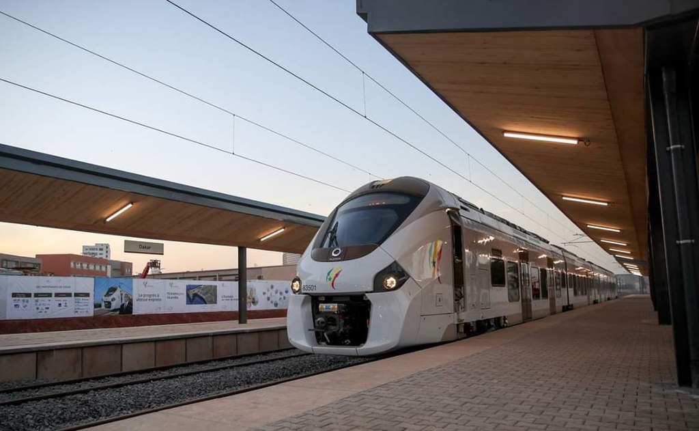
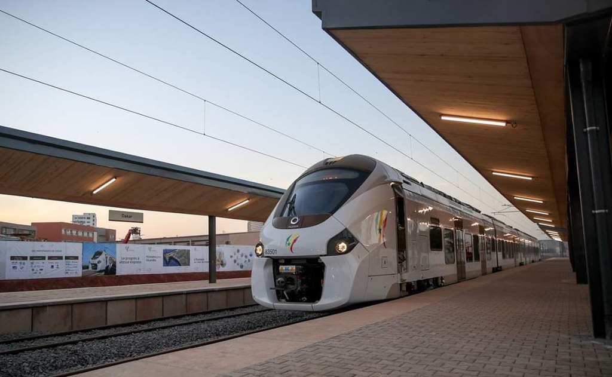
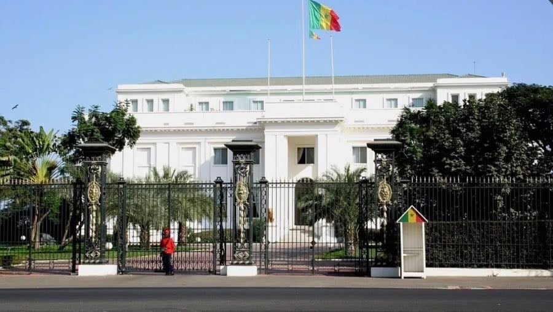
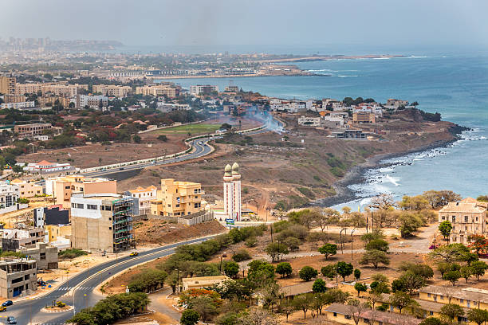
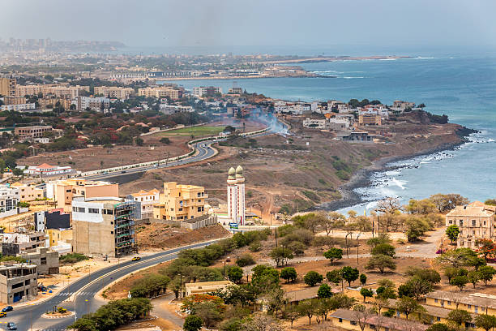
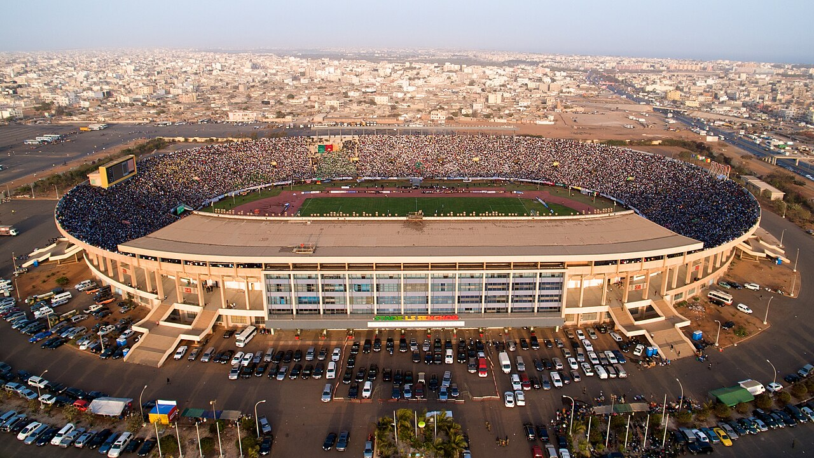

SITUATION GEOGRAPHIQUE
Altitude 27 m
Min. 0 m
Max. 104 m
Superficie 12 100 ha = 121 km2

la ville de dakar appelle en wolof ndakarou est la capitale du Sénégal et de la région de Dakar. C'est une des quatre communes historiques du Sénégal et l'ancienne capitale de l'Afrique-Occidentale française (AOF).
Altitude 27 m
Min. 0 m
Max. 104 m
Superficie 12 100 ha = 121 km2
Gentilé Dakarois
Population 1 250 000 hab. (20231)
Densité 10 331 hab./km2
Population de l'agglomération 4 250 000 hab.
Parmi les bâtiments d'intérêt architectural, il y a la gare de Dakar, l'Assemblée nationale, le palais présidentiel ainsi que les bâtiments de l'île de Gorée...
La gare de Dakar est une gare ferroviaire située à Dakar au Sénégal, sur la place de la gare Dakar-Niger rebaptisée place du Tirailleur le 23 août 2004. La gare a été fermée en 20091, lors de la fermeture de la ligne du chemin de fer Dakar-Niger en vue de sa démolition2. Elle gare a été réhabilitée en 2018 et rouverte en janvier 2019 pour un trajet d'inauguration du Train express régional (TER) qui relie Dakar à l'aéroport international Blaise-Diagne en passant par Diamniadio et en reprenant le parcours du PTB3.
 

Le palais de la République est une demeure historique, située à Dakar (Sénégal), dans le quartier du Plateau. Après avoir été la résidence officielle du gouverneur général de l'AOF, c'est aujourd'hui celle du président de la république du Sénégal

 

Dakar réunit les grandes manifestations sportives et les principales infrastructures du pays, surtout celles dédiées aux sports nationaux que sont le football et la lutte sénégalaise – par exemple le stade Léopold-Sédar-Senghor ou le stade Demba-Diop.
